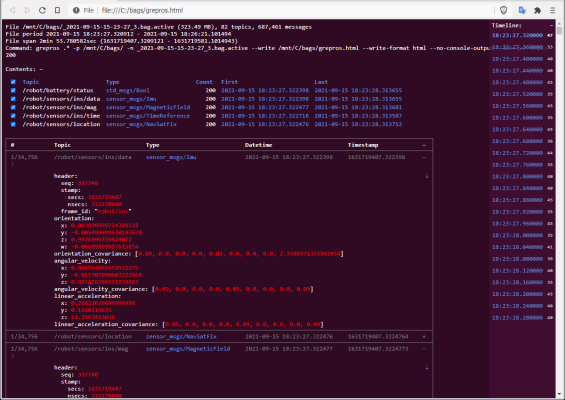

grep for ROS bag files and live topics
Index
Installation
Using the program
Matching and filtering
Outputs
console
bag
csv
live
html
postgres
sqlite
Message formatting in console / html
Nested messages in postgres / sqlite
SQL dialects
Command-line options
Plugins
Changelog
API documentation
View the Project on GitHub suurjaak/grepros
There can be any number of outputs: printing to console (default), publishing to live ROS topics, or writing to file or database.
Some outputs require loading extra plugins.
Default output is to console, in ANSI colors, mimicking grep output.
Disable printing messages to console:
--no-console-output
Manage color output:
--color always (default) --color auto (auto-detect terminal support) --color never (disable colors)
Note that when paging color output with more or less,
the pager needs to accept raw control characters (more -f or less -R).
--write path/to/my.bag [format=bag] [overwrite=true|false]
Write messages to a ROS bag file, the custom .bag format in ROS1,
or the .db3 SQLite database format in ROS2. If the bagfile already exists,
it is appended to, unless specified to overwrite.
Specifying format=bag is not required
if the filename ends with .bag in ROS1 or .db3 in ROS2.
For writing bags in MCAP format, see the MCAP plugin.
--publish
Publish messages to live ROS topics. Topic prefix and suffix can be changed, or topic name set to one specific name:
--publish-prefix /myroot --publish-suffix /myend --publish-fixname /my/singular/name
One of the above arguments needs to be specified if publishing to live ROS topics while grepping from live ROS topics, to avoid endless loops.
Set custom queue size for publishers (default 10):
--queue-size-out 100
--write path/to/my.csv [format=csv] [overwrite=true|false]
Write messages to CSV files, each topic to a separate file, named
path/to/my.full__topic__name.csv for /full/topic/name.
Output mimicks CSVs compatible with PlotJuggler, all messages values flattened
to a single list, with header fields like /topic/field.subfield.listsubfield.0.data.1.
If a file already exists, a unique counter is appended to the name of the new file,
e.g. my.full__topic__name.2.csv, unless specified to overwrite.
Specifying format=csv is not required if the filename ends with .csv.
--write path/to/my.html [format=html] [overwrite=true|false]
[template=/path/to/html.template]
Write messages to an HTML file, with a linked table of contents, message timeline, message type definitions, and a topically traversable message list.
Note: resulting file may be large, and take a long time to open in browser.
If the file already exists, a unique counter is appended to the name of the new file,
e.g. my.2.html, unless specified to overwrite.
Specifying format=html is not required
if the filename ends with .htm or .html.
A custom template file can be specified, in step syntax:
--write path/to/my.html template=/my/html.template
--write postgresql://username@host/dbname [format=postgres]
[commit-interval=NUM] [nesting=array|all]
[dialect-file=path/to/dialects.yaml]
Write messages to a Postgres database, with tables pkg/MsgType for each ROS message type,
and views /full/topic/name for each topic.
Plus table topics with a list of topics,
types with message types and definitions,
and meta with table/view/column name changes from shortenings and conflicts,
if any (Postgres name length is limited to 63 characters).
ROS primitive types are inserted as Postgres data types (time/duration types as NUMERIC),
uint8[] arrays as BYTEA, other primitive arrays as ARRAY,
and arrays of subtypes as JSONB.
If the database already exists, it is appended to. If there are conflicting names (same package and name but different message type definition), table/view name becomes "name (MD5 hash of type definition)".
Specifying format=postgres is not required if the parameter uses the
Postgres URI scheme postgresql://.
Parameter --write can also use the Postgres keyword=value format, e.g.:
--write "host=localhost port=5432 dbname=mydb username=postgres connect_timeout=10"
Requires psycopg2.
Standard Postgres environment variables are also supported (PGPASSWORD et al).
A custom transaction size can be specified (default is 1000; 0 is autocommit):
--write postgresql://username@host/dbname commit-interval=NUM
Nested message types can be recursively populated to separate tables, linked to parent messages via foreign keys.
--write postgresql://username@host/dbname nesting=array --write postgresql://username@host/dbname nesting=all
Updates to Postgres SQL dialect can be loaded from a YAML or JSON file:
--write postgresql://username@host/dbname dialect-file=path/to/dialects.yaml
--write path/to/my.sqlite [format=sqlite] [overwrite=true|false]
[commit-interval=NUM] [message-yaml=true|false] [nesting=array|all]
[dialect-file=path/to/dialects.yaml]
Write an SQLite database with tables pkg/MsgType for each ROS message type
and nested type, and views /full/topic/ for each topic.
If the database already exists, it is appended to, unless specified to overwrite.
Output is compatible with ROS2 .db3 bagfiles, supplemented with
full message YAMLs, and message type definition texts. Note that a database
dumped from a ROS1 source will most probably not be usable as a ROS2 bag,
due to breaking changes in ROS2 standard built-in types and message types.
Specifying format=sqlite is not required
if the filename ends with .sqlite or .sqlite3.
A custom transaction size can be specified (default is 1000; 0 is autocommit):
--write path/to/my.sqlite commit-interval=NUM
By default, table messages is populated with full message YAMLs, unless:
--write path/to/my.sqlite message-yaml=false
Nested message types can be recursively populated to separate tables, linked to parent messages via foreign keys.
--write path/to/my.sqlite nesting=array --write path/to/my.sqlite nesting=all
Updates to SQLite SQL dialect can be loaded from a YAML or JSON file:
--write path/to/my.sqlite dialect-file=path/to/dialects.yaml
Set maximum number of lines to output per message:
--lines-per-message 5
Set maximum number of lines to output per message field:
--lines-per-field 2
Start message output from, or stop output at, message line number:
--start-line 2# (1-based if positive--end-line -2# (count back from total if negative)
Output only the fields where patterns find a match:
--matched-fields-only
Output only matched fields and specified number of lines around match:
--lines-around-match 5
Output only specific message fields (supports nested.paths and * wildcards):
--emit-field *data
Skip outputting specific message fields (supports nested.paths and * wildcards):
--no-emit-field header.stamp
Wrap matches in custom texts:
--match-wrapper @@@ --match-wrapper "<<<<" ">>>>"
Set custom width for wrapping message YAML printed to console (auto-detected from terminal by default):
--wrap-width 120
Nested message types can be recursively populated to separate tables, linked to parent messages via foreign keys.
To recursively populate nested array fields:
--write postgresql://username@host/dbname nesting=array --write path/to/my.sqlite nesting=array
E.g. for diagnostic_msgs/DiagnosticArray, this would populate the following tables:
-- In postgres:CREATE TABLE "diagnostic_msgs/DiagnosticArray" ( "header.seq" BIGINT, "header.stamp.secs" INTEGER, "header.stamp.nsecs" INTEGER, "header.frame_id" TEXT, status JSONB,-- [_id from "diagnostic_msgs/DiagnosticStatus", ]_topic TEXT, _timestamp NUMERIC, _id BIGSERIAL, _parent_type TEXT, _parent_id BIGINT ); CREATE TABLE "diagnostic_msgs/DiagnosticStatus" ( level SMALLINT, name TEXT, message TEXT, hardware_id TEXT, "values" JSONB,-- [_id from "diagnostic_msgs/KeyValue", ]_topic TEXT,-- _topic from "diagnostic_msgs/DiagnosticArray"_timestamp NUMERIC,-- _timestamp from "diagnostic_msgs/DiagnosticArray"_id BIGSERIAL, _parent_type TEXT,-- "diagnostic_msgs/DiagnosticArray"_parent_id BIGINT-- _id from "diagnostic_msgs/DiagnosticArray"); CREATE TABLE "diagnostic_msgs/KeyValue" ( "key" TEXT, value TEXT, _topic TEXT,-- _topic from "diagnostic_msgs/DiagnosticStatus"_timestamp NUMERIC,-- _timestamp from "diagnostic_msgs/DiagnosticStatus"_id BIGSERIAL, _parent_type TEXT,-- "diagnostic_msgs/DiagnosticStatus"_parent_id BIGINT-- _id from "diagnostic_msgs/DiagnosticStatus");
-- In sqlite:CREATE TABLE "diagnostic_msgs/DiagnosticArray" ( "header.seq" INTEGER, "header.stamp.secs" INTEGER, "header.stamp.nsecs" INTEGER, "header.frame_id" TEXT,-- [_id from "diagnostic_msgs/DiagnosticStatus", ]status "DIAGNOSTIC_MSGS/DIAGNOSTICSTATUS[]", _topic TEXT, _timestamp INTEGER, _id INTEGER PRIMARY KEY AUTOINCREMENT NOT NULL, _parent_type TEXT, _parent_id INTEGER ); CREATE TABLE "diagnostic_msgs/DiagnosticStatus" ( level SMALLINT, name TEXT, message TEXT, hardware_id TEXT, -- [_id from "diagnostic_msgs/KeyValue", ] "values" "DIAGNOSTIC_MSGS/KEYVALUE[]", _topic TEXT,-- _topic from "diagnostic_msgs/DiagnosticArray"_timestamp INTEGER,-- _timestamp from "diagnostic_msgs/DiagnosticArray"_id INTEGER PRIMARY KEY AUTOINCREMENT NOT NULL, _parent_type TEXT,-- "diagnostic_msgs/DiagnosticArray"_parent_id INTEGER-- _id from "diagnostic_msgs/DiagnosticArray"); CREATE TABLE "diagnostic_msgs/KeyValue" ( "key" TEXT, value TEXT, _topic TEXT,-- _topic from "diagnostic_msgs/DiagnosticStatus"_timestamp INTEGER,-- _timestamp from "diagnostic_msgs/DiagnosticStatus"_id INTEGER PRIMARY KEY AUTOINCREMENT NOT NULL, _parent_type TEXT,-- "diagnostic_msgs/DiagnosticStatus"_parent_id INTEGER-- _id from "diagnostic_msgs/DiagnosticStatus");
Without nesting, array field values are inserted as JSON with full subtype content.
To recursively populate all nested message types:
--write postgresql://username@host/dbname nesting=all --write path/to/my.sqlite nesting=all
E.g. for diagnostic_msgs/DiagnosticArray, this would,
in addition to the above, populate:
-- In postgres:CREATE TABLE "std_msgs/Header" ( seq BIGINT, "stamp.secs" INTEGER, "stamp.nsecs" INTEGER, frame_id TEXT, _topic TEXT,-- _topic from "diagnostic_msgs/DiagnosticArray"_timestamp NUMERIC,-- _timestamp from "diagnostic_msgs/DiagnosticArray"_id BIGSERIAL, _parent_type TEXT,-- "diagnostic_msgs/DiagnosticArray"_parent_id BIGINT-- _id from "diagnostic_msgs/DiagnosticArray");
-- In sqlite:CREATE TABLE "std_msgs/Header" ( seq UINT32, "stamp.secs" INT32, "stamp.nsecs" INT32, frame_id TEXT, _topic STRING,-- _topic from "diagnostic_msgs/DiagnosticArray"_timestamp INTEGER,-- _timestamp from "diagnostic_msgs/DiagnosticArray"_id INTEGER PRIMARY KEY AUTOINCREMENT NOT NULL, _parent_type TEXT,-- "diagnostic_msgs/DiagnosticArray"_parent_id INTEGER-- _id from "diagnostic_msgs/DiagnosticArray");
Postgres, SQLite and SQL outputs support loading additional options for SQL dialect.
Dialect file format:
dialectname:
table_template: CREATE TABLE template; args: table, cols, type, hash, package, class
view_template: CREATE VIEW template; args: view, cols, table, topic, type, hash, package, class
table_name_template: message type table name template; args: type, hash, package, class
view_name_template: topic view name template; args: topic, type, hash, package, class
types: Mapping between ROS and SQL common types for table columns,
e.g. {"uint8": "SMALLINT", "uint8[]": "BYTEA", ..}
adapters: Mapping between ROS types and callable converters for table columns,
e.g. {"time": "decimal.Decimal"}
defaulttype: Fallback SQL type if no mapped type for ROS type;
if no mapped and no default type, column type will be ROS type as-is
arraytype_template: Array type template; args: type
maxlen_entity: Maximum table/view name length, 0 disables
maxlen_column: Maximum column name length, 0 disables
invalid_char_regex: Regex for matching invalid characters in name, if any
invalid_char_repl: Replacement for invalid characters in name
Template parameters like table_name_template use Python str.format() keyword syntax,
e.g. {"table_name_template": "{type}", "view_name_template": "{topic}"}.
Time/duration types are flattened into separate integer columns secs and nsecs,
unless the dialect maps them to SQL types explicitly, e.g. {"time": "BIGINT"}.
Any dialect options not specified in the given dialect or built-in dialects, will be taken from the default dialect configuration (sqlite):
table_template: 'CREATE TABLE IF NOT EXISTS {table} ({cols});'
view_template: 'DROP VIEW IF EXISTS {view};
CREATE VIEW {view} AS
SELECT {cols}
FROM {table}
WHERE _topic = {topic};'
table_name_template: '{type}',
view_name_template: '{topic}',
types: {}
defaulttype: null
arraytype_template: '{type}[]'
maxlen_entity: 0
maxlen_column: 0
invalid_char_regex: null
invalid_char_repl: '__'
-- clickhouse dialect defaults:
arraytype_template: Array({type})
defaulttype: String
table_template: CREATE TABLE IF NOT EXISTS {table} ({cols}) ENGINE = ENGINE;
types:
bool: UInt8
float32: Float32
float64: Float64
int16: Int16
int32: Int32
int64: Int64
int8: Int8
string: String
uint16: UInt16
uint32: UInt32
uint64: UInt64
uint8: UInt8
uint8[]: String
wstring: String
-- postgres dialect defaults:
defaulttype: JSONB
maxlen_column: 63
maxlen_entity: 63
types:
bool: BOOLEAN
float32: REAL
float64: DOUBLE PRECISION
int16: SMALLINT
int32: INTEGER
int64: BIGINT
int8: SMALLINT
string: TEXT
uint16: INTEGER
uint32: BIGINT
uint64: BIGINT
uint8: SMALLINT
uint8[]: BYTEA
wstring: TEXT
{kind=link}
{kind=link}
{kind=link}